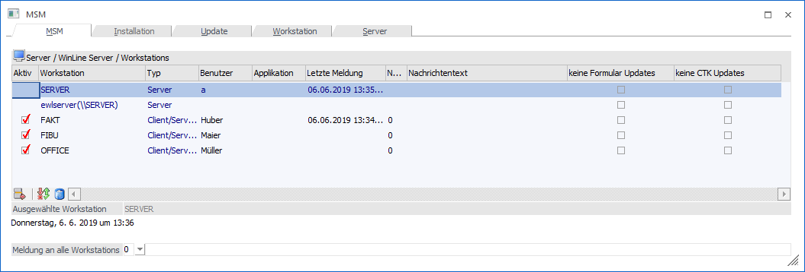
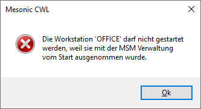

Über den Menüpunkt…
Ø MSM
Ø MSM
… können diverse Arbeiten im Zusammenhang mit der Netzwerkinstallation durchgeführt werden.

In der Tabelle werden der Server und alle PC´s angezeigt, auf denen das Programm installiert wurde.
Diese PC´s können alle in unterschiedlichen Farben dargestellt werden:
Ø Blau
Nur der Server wird in blauer Schrift dargestellt. An den Server können auch keine Nachrichten gesandt werden.
Ø Schwarz
Wenn die Workstation in schwarzer Schrift dargestellt wird, bedeutet das, das alles in Ordnung ist.
Ø Rot
Wird eine Workstation in roter Schrift dargestellt, bedeutet das, dass an diese Workstation eine Meldung geschickt wurde, die noch nicht "abgeholt" wurde (weil der Benutzer z.B. gerade nicht auf seinem Platz ist, oder weil ein Update durchgeführt wurde, während der Benutzer auf Urlaub war).
Folgende Informationen werden angezeigt:
Ø Aktiv
Ist die Checkbox aktiviert, kann das Programm auf der Workstation aufgerufen werden.
Ist die Checkbox inaktiv, kann das Programm auf der Workstation nicht gestartet werden.
Die Workstation sollte dann deaktiviert werden, wenn z.B. Wartungsarbeiten am Server (neue Platte wird eingebaut, WinLine wird upgedatet etc.) durchgeführt werden müssen. Der Benutzer erhält dann beim Aufruf die entsprechenden Meldungen:

Ø Workstation
In diesem Feld wird der Name der Workstation angezeigt.
CWL Benutzer erhalten einen temporären MSM Eintrag wenn sie angemeldet sind.
Alle angemeldeten Benutzer werden in der MSM - Tabelle als eigener temporärer Datensatz angelegt. Dieses dient der Feststellung, ob eine Instanz noch funktionsfähig ist. Für jeden Benutzer, der das Cwlstart.exe gestartet hat ,erhält einen zusätzlichen Eintrag mit der Bezeichnung
Ø Typ
In diesem Feld wird der Typ der installierten Workstation angezeigt. Dabei gibt es folgende Unterscheidungen.
ü Client/Server Installation
Die
Programme werden von der Workstation aufgerufen, die Daten liegen am Server.
ü Zentrale Installation
Die
Programme und die Daten liegen am Server. Die Programme werden über eine
Verknüpfung am Server aufgerufen.
ü Terminal Server
Ein Benutzer
meldet sich an den Terminal Server an und verwendet diesen wie einen "normalen"
PC. Die benutzerspezifischen Einstellungen werden in einem eigenen Verzeichnis
gespeichert.
ü Server Farm
Das Programm wird
von einer beliebigen Workstation gestartet, das Benutzerverzeichnis liegt aber
immer am Server.
Ø Benutzer
Hier wird der Benutzer angezeigt, der normalerweise auf der Workstation arbeitet bzw. der als letzter auf der Workstation angemeldet war.
Ø Applikation
In diesem Feld wird die Applikation angezeigt, die der Benutzer gerade aufgerufen hat. Dabei gibt es folgenden Möglichkeiten:
ü WinLine EXIM
Der Benutzer
arbeitet im Programm WinLine EXIM
ü WinLine START
Der
Benutzer arbeitet in einem der normalen WinLine - Programmen (WinLine FIBU,
WinLine FAKT etc.). Eine Unterscheidung, in welchen Programm der Benutzer sich
befindet, kann nicht getroffen werden.
Ø Letzte Meldung
Jede Workstation schickt in regelmäßigen Abständen eine Meldung an den Server (der Zeitraum kann im Programm WinLine START im Menüpunkt Parameter/Einstellungen geändert werden). Im Feld Letzte Meldung wird angezeigt, wann sich die Workstation das letzte Mal "gemeldet" hat. Liegt dieser Zeitpunkt länger als 30 Sekunden zurück und wird auch noch der Benutzer und die Applikation angezeigt, kann davon ausgegangen werden, dass mit dieser Workstation etwas nicht in Ordnung ist.
Achtung
Der Vergleich mit der Uhrzeit kann nur dann durchgeführt werden, wenn auf dem Server und den Workstations die richtige Uhrzeit eingestellt wurde.
Ø Nachricht
Aus der Auswahllistbox kann ein Nachrichten-Typ ausgewählt werden. Diese Nachricht wird nur an die selektierte Workstation gesandt.
Folgende Nachrichten-Typen können ausgewählt werden:
ü 3 - LOGOUT
An den Benutzer wird
die Meldung geschickt, dass die Applikation verlassen werden muss. Zusätzlich
zum Text, der vom Programm vergeben wird, kann eine frei definierbare Meldung
mitgeschickt werden. Nach Bestätigung der Meldung kann der Benutzer aber
weiterhin arbeiten.
ü 4 - STOP
An den Benutzer wird
die Meldung geschickt, dass die Applikation beendet wird. Zusätzlich zum Text,
der vom Programm vergeben wird, kann eine frei definierbare Meldung mitgeschickt
werden. Nach Bestätigung der Meldung wird das Programm beendet.
ü 5 - MELDUNG
Mit diesem Typ kann
eine frei definierbare Nachricht versandt werden. Zusätzlich zum Text, der vom
Programm vergeben wird, kann eine beliebige Meldung mitgeschickt werden. Durch
Bestätigung der Meldung wird keine Aktion ausgelöst.
ü 9 - INSTALL
Dieser Meldungstyp
wird von der Installation vorgegeben. Sobald die Installation auf der
Workstation ordnungsgemäß durchgeführt wurde(der Client muss zumindest einmal
aufgerufen werden), wird dieser Typ auf 0 - keine Meldung zurückgesetzt.
Meldungen können entweder an einzelne Benutzer oder an alle verschickt werden. Soll eine Meldung für alle verschickt werden, muss diese Meldung aus der Auswahllistbox
Ø Meldung an alle Workstations
ausgewählt werden. Dazu kann noch ein freier Text mitgeschickt werden.
Durch Anklicken des Senden-Buttons wird die Nachricht an alle Workstations verteilt.
Wann werden Meldungen automatisch verschickt?
Wird eine neue Programmversion installiert, erkennt das das Programm automatisch und setzt bei allen installierten Workstations das Kennzeichen (=Meldung) 1. Beim nächsten Aufruf der Workstation werden alle entsprechenden Dateien vom Server kopiert.
Werden Änderungen in der Installation vorgenommen (Änderung eines Listbildes, Eingabe einer neuen Lizenz etc.) wird das Kennzeichen (=Meldung) 2 gesetzt. Beim nächsten Aufruf der Workstation wird automatisch ein Abgleich der entsprechenden Dateien durchgeführt.
Wenn bei einem Eintrag diese Option aktiviert ist, dann werden an diese Workstation (Terminal-Server etc.) keine geänderten Formulare verteilt. D.h. dieser Client behält immer seine Formulare bei.
Ø keine CTK Updates
Wenn bei einem Eintrag diese Option aktiviert ist, dann werden an diese Workstation (Terminal-Server etc.) keine geänderten Fensteränderungen verteilt. D.h. dieser Client behält immer seine Fenster bei.